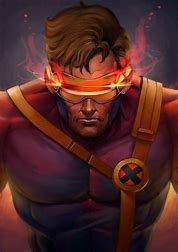
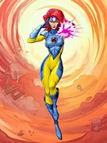
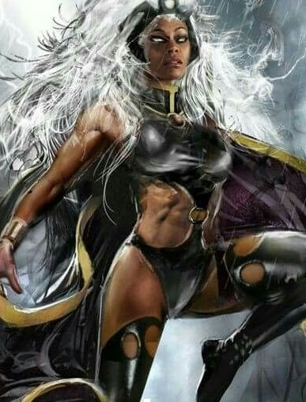
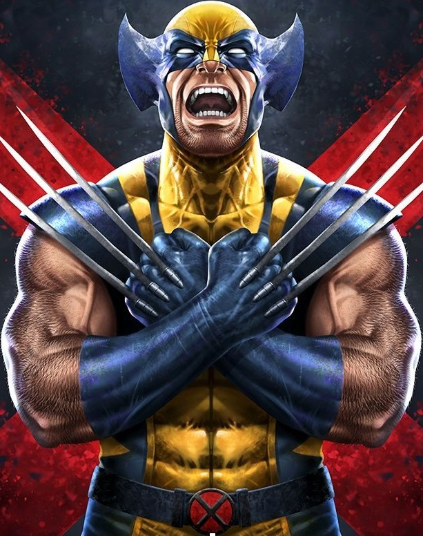

-
CICLOPE
Descrição
Líder dos X-Men, Ciclope é conhecido por seu controle óptico instável que emite rajadas de energia. Ele é um dos membros originais da equipe.Ciclope desempenha um papel crucial na liderança dos X-Men e é frequentemente retratado como um guerreiro corajoso e leal na série animada.
-
JEAN GREY
Descrição
Jean Grey, também conhecida como Fênix, é uma mutante telepata e telecinética. Ela é uma das primeiras recrutas dos X-Men e tem uma conexão profunda com o Professor Xavier.
-
TEMPESTADE
Descrição
Tempestade é uma mutante com a habilidade de controlar o clima. Ela é reverenciada como uma deusa em sua terra natal, Quênia.Tempestade é uma presença poderosa nos X-Men, tanto pela sua força como pelos seus valores morais. Sua sabedoria e liderança são destacadas na série animada.
-
VAMPIRA

Descrição
Vampira é uma mutante que pode absorver as habilidades, memórias e força vital de outras pessoas através do toque.Vampira é retratada como uma jovem mutante lutando para controlar seus poderes enquanto busca seu lugar nos X-Men.
-
WOLVERINE
Descrição
Wolverine é um mutante com um esqueleto revestido de adamantium e garras retráteis. Ele tem uma história misteriosa e tumultuada.Wolverine é um dos personagens mais populares dos X-Men e desempenha um papel de destaque na animação, muitas vezes retratado como um anti-herói com um coração de ouro.